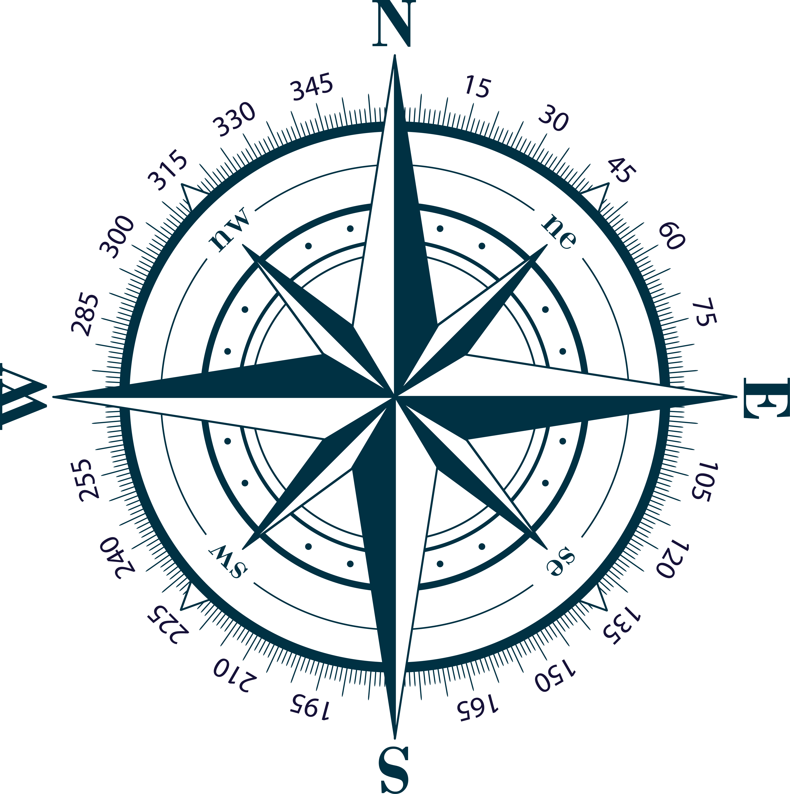

<!doctype html>
<html lang="en">
  <head>
    <meta charset="UTF-8" />
    <meta name="viewport" content="width=device-width, initial-scale=1.0" />
    <title>Start Compass</title>
    <style>
      canvas {
        position: absolute;
        left: 50%;
        transform: translateX(-50%);
        /* border: 0.25px solid black; */
      }
      img {
        position: absolute;
        opacity: 0.1;
        left: 50%;
        transform: translateX(-50%);
        /* border: 0.25px solid black; */
      }
      .w100 {
        top: 10px;
      }
      .w200 {
        top: 130px;
      }
      .w300 {
        top: 350px;
      }
      .w400 {
        top: 670px;
      }
      .w500 {
        top: 1090px;
      }
      .w600 {
        top: 1610px;
      }
    </style>
  </head>
  <body>
    <canvas class="w100 star-compass" width="100"></canvas>
    <canvas class="w200 star-compass" width="200"></canvas>
    <canvas class="w300 star-compass" width="300"></canvas>
    <canvas class="w400 star-compass" width="400"></canvas>
    <canvas class="w500 star-compass" width="500"></canvas>
    <canvas class="w600 star-compass" width="600"></canvas>
    <!-- 
    
    
    
    
     -->
  </body>
  <script type="module">
    import StarCompass from './dist/star-compass.js'
    document.querySelectorAll('canvas.star-compass').forEach((canvas) => {
      new StarCompass(canvas)
    })
  </script>
</html>
